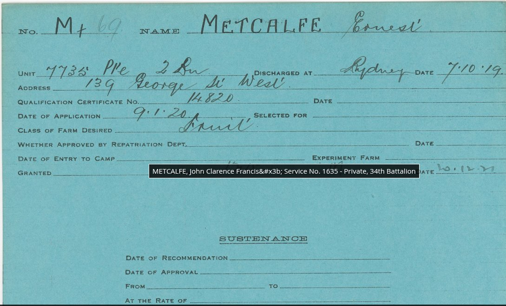
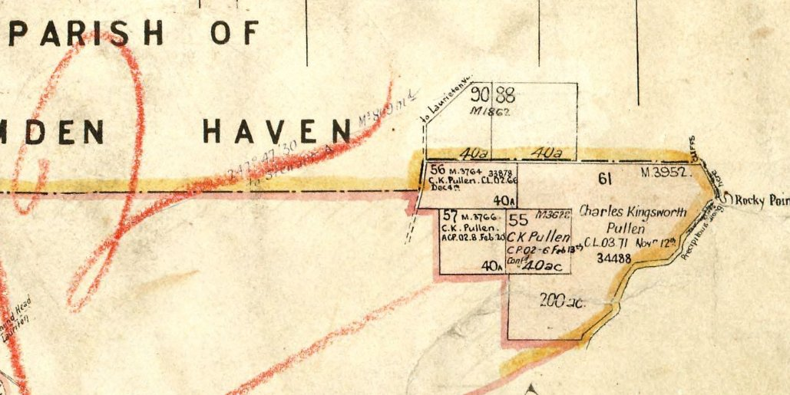
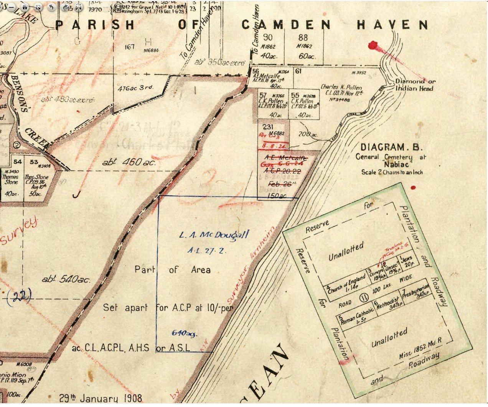
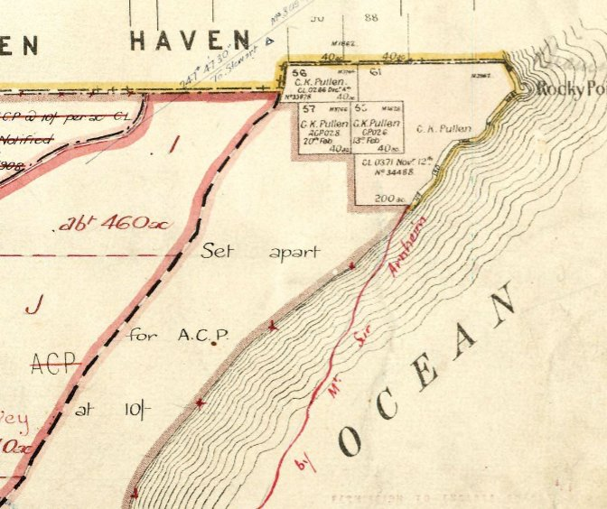
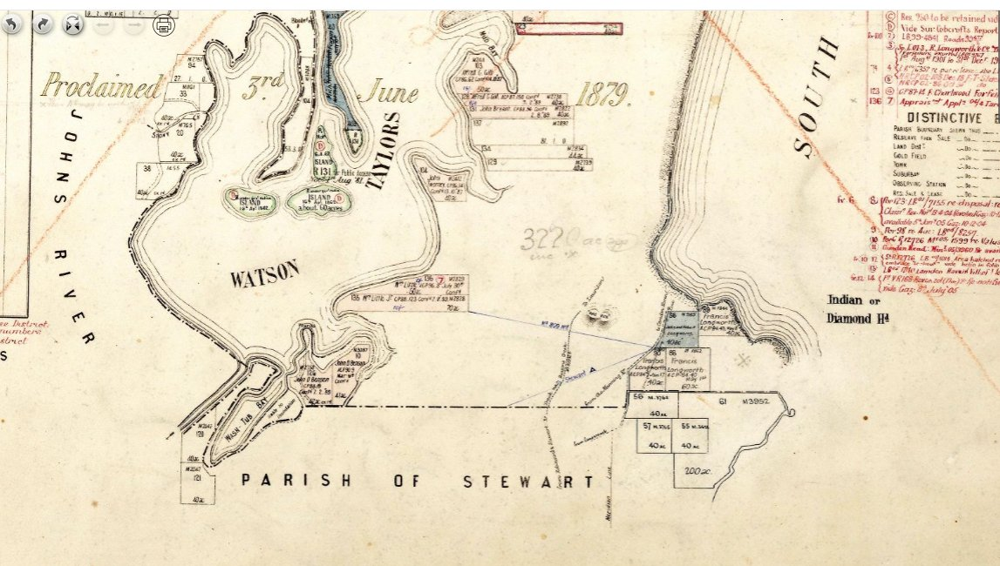
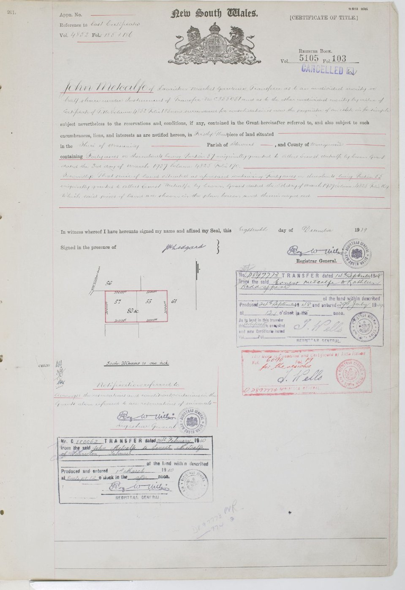
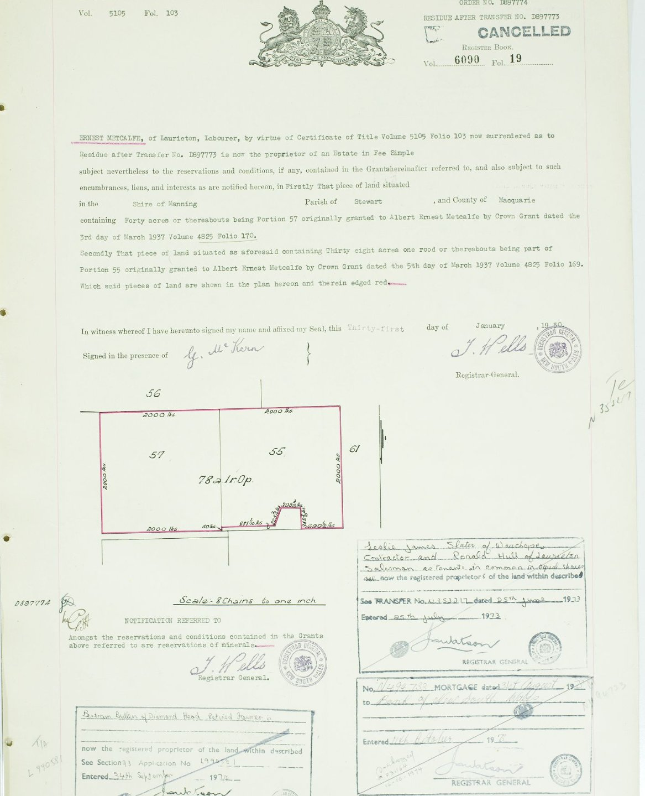
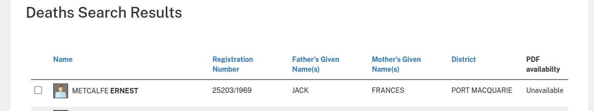
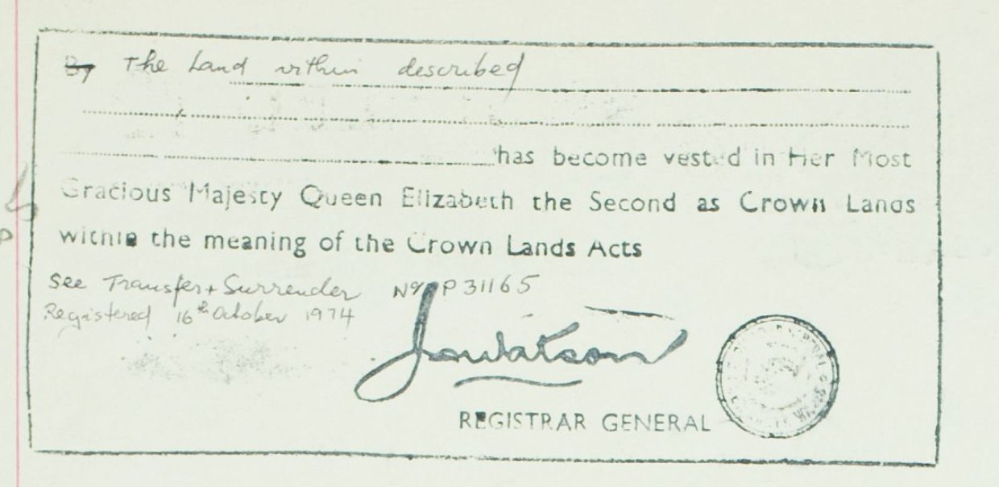

A returned soldier who never married, a celebrated novelist seeking a writing retreat, and 300 acres of swamp and cliff on the NSW mid-north coast. This is the story of how one family's land became a national park.
Albert Ernest Metcalfe — known all his life as Ernie — was born around 1886 at Johns River, near the small coastal settlement of Camden Haven on the NSW mid-north coast. His father was Jack Metcalfe, his mother Frances. The Metcalfe family were already established in the district — George Charles Metcalfe held a large conditional purchase in the neighbouring Parish of Harrington.
On 20 February 1902, at about sixteen years of age, Ernie applied for a Conditional Purchase of 40 acres at Diamond Head — Portion 56 in the Parish of Stewart, County of Macquarie. The land sat on the coastal plain between Watson Taylors Lake and the South Pacific Ocean, with the dramatic basalt headland rising to the east.
When the Great War came, Ernie enlisted in the 2nd Battalion AIF, Service Number 7735. He served overseas and was discharged at Sydney on 7 October 1919. The war changed him. He later told Kylie Tennant that after France, Australian girls seemed "uninteresting and stiff compared to French girls." He never married.

On 9 January 1920, barely three months after discharge, Ernie applied for soldier settlement land. On his card he wrote that the class of farm he desired was "Fruit." But Diamond Head, with its wild coastal heath, basalt cliffs, and swampy lowlands, had other ideas.
Over the following years Ernie built up his holdings. Portion 56 came first. Then a substantial 150-acre block — Portion 231 — was gazetted to him in June 1924 from Crown land that had been set apart for conditional purchase at ten shillings per acre. He acquired two more 40-acre blocks — Portions 55 and 57 — from the original holder, Charles K. Pullen. By the early 1930s, Ernie and his brothers held nearly 300 acres of Diamond Head between them.
The parish maps of Stewart trace the Metcalfe family's gradual acquisition of Diamond Head. In 1912, C.K. Pullen held the coastal portions. By 1920, A.E. Metcalfe (Ernie's initials — Albert Ernest) appears on Portion 56, and the new Portion 231 is being carved from Crown land. By the 1930s, the Metcalfe name dominates the headland.




Portion 61 — the 200-acre block between Ernie's holdings and Diamond Head itself — was Crown land, reserved for "Future Public Requirements." Ernie grazed his cattle across it freely. When you're the only person living seven miles out on a dirt track, the boundary between your land and the Crown's is largely academic.
The Metcalfe brothers each took different paths but stayed connected through the Diamond Head land. Jack — the eldest, "a real farmer" — worked the property hard. Albert kept beehives by the lake at Laurieton and had "beautiful manners." Ernie was the dreamer, the gentleman soldier who tried to sell cabbages nobody wanted.
In May 1937, Ernie transferred Portions 55 and 57 to his brother John (Jack) and a market gardener named Alfred William Brims, as tenants in common. The reasons are unclear — perhaps a financial arrangement, perhaps Jack taking over the active farming.
But by February 1940, the land came back. Jack, retired with a bad heart, transferred everything to Ernie. As Kylie Tennant later wrote: "Ernie had bought the 300 acres of swamp and cliff from his brother Jack who had retired, with a bad heart, to live in a caravan of cedar and painted glass, once the ornament of a circus."

During the Second World War, Kathleen "Kylie" Tennant and her husband Lewis Rodd moved to Laurieton. She was already a celebrated author — The Battlers, Foveaux, Ride on Stranger — known for her fierce social conscience and her habit of living inside the worlds she wrote about. She had spent time in jail for research. She had lived in slums. Now she found herself walking the shores of Queens Lake.
It was on one of those walks, gathering mushrooms along the lakeshore one green and gold morning, that she met Albert Metcalfe, Ernie's brother. Albert mentioned that Ernie was "just battling" out at Diamond Head. Tennant, with a sick baby, asked if they might come and stay.
What followed was one of Australian literature's most unlikely friendships. The celebrated novelist and the reclusive soldier-farmer. They walked the cliffs of columnar basalt. Ernie carried Tennant's baby down to the beach on his back. She sold him her herd of Saanen goats, which "promptly mated with the wild goats on the cliff."
In the late 1960s, Ernie built Kylie a timber slab cottage — a single room with a verandah and a stone fireplace, constructed single-handed from a demolished barn of hand-adzed timber. The chimney was his particular triumph.
The price for the land, Ernie insisted, was five pounds. A valuer said sixty. Ernie stormed to the solicitor's office and demanded the price be five pounds. "He was selling the land and he ought to know what it was worth."
On 1 September 1949, the land was formally transferred. In the Registrar General's office in Sydney, the record shows: Transfer from Ernest Metcalfe to Kathleen Rodd — Kylie Tennant's married name.
Look at the survey plan on the title, and you can see the story. Portions 55 and 57 form a neat rectangle — 80 acres. And at the bottom right corner, a tiny notch has been cut out. That notch is Kylie's cottage block — roughly an acre and a half, carved from Ernest's land. The residue — 78 acres 1 rood — stayed with Ernie.

It was from this cottage, on this tiny parcel of land at the edge of the South Pacific, that Kylie Tennant wrote The Man on the Headland — a novel portraying Ernie Metcalfe and the wild beauty of Crowdy Bay. It was published in 1971, two years after Ernie's death.
Ernie never did become a fruit farmer, despite what his soldier settlement card said. Instead he became something rarer — a man who lived in harmony with his land until the land became part of him.
He grew peaches, bananas, strawberries — then let the kangaroos and wallabies have them. He kept sixty beehives but decided the bees "seem to need the honey more than I do." He surrendered his cane lounge to the chickens and let swallows nest over his bed, covering himself with newspapers while the mother bird went out and left him baby-sitting.
His land became a sanctuary. Koalas, possums, and shy birds found refuge. Shooters who thought Diamond Head was a good spot for sport would find Ernie appearing with his own rifle, his slouch hat pushed back on his grey curls. One look and they slunk away.
He wore riding boots from his Queensland gold-digging days, a grey flannel undershirt, and corduroy trousers. He played correspondence chess — the same tattered piece of paper going back and forth for twelve months. He drove into town standing majestically on a cartload of unsold cabbages. When he finally signed up for the old age pension, he said: "Now I am on the same level as royalty. The country's supporting both of us."
Ernest Metcalfe died in 1969, aged approximately 83. He had never married. He left no will that covered the Diamond Head land. He was registered in the Port Macquarie district — the same country he had known since boyhood at Johns River.

Within a year of Ernie's death, Bertram Bullen — a retired farmer who lived at Diamond Head — lodged a Section 93 possessory title claim over Ernie's remaining land. On 24 September 1970, Bullen was registered as proprietor. The man who had occupied and used the land simply claimed it through long possession.
The chain moved quickly after that. In 1972, Crowdy Bay National Park was formally reserved. In 1973, Bullen sold Portions 55 and 57 to Leslie James Slater and Ronald Hull. And on 16 October 1974, the final entry was made on the title:

In 1976, Kylie Tennant donated her separate cottage block — the £5 acre and a half — to complete the picture. The hut, the cottage, the paddocks, the cliffs, the swamp Ernie had drained and the ducks that came back — all of it became public land forever.
Today, Metcalfes Walking Track links Indian Head and Kylies Beach through the coastal forest of Crowdy Bay National Park. Kylie's Hut — rebuilt in 2022 after the original burnt in the 2019–20 bushfires — sits in a shady glen surrounded by paperbarks and sheoaks. The beach still curves fourteen miles down to Crowdy Lighthouse, just as it did when Ernie carried Tennant's baby down the cliffs on his back.
Ernest Metcalfe's 1902 Conditional Purchase — lodged when he was barely sixteen — became a novel, a walking track, a campground, and a national park. His land, which he held for sixty-seven years, is now held by all of us.
| Date | Event | Reference |
|---|---|---|
| 20 Feb 1902 | CP applied by Albert Ernest Metcalfe | CP 1902/8 |
| 17 Apr 1915 | Additional CP | ACP 15.18 |
| c. 1956 | Crown Grant formally issued to Ernest Metcalfe | Vol 7084 Fol 243 |
| 24 Sep 1970 | Bertram Bullen claims via Section 93 possessory title | Application L990581 |
| 30 Oct 1970 | New title issued | Vol 11437 Fol 246 |
| Date | Event | Reference |
|---|---|---|
| 13 Feb 1902 | CP applied by Albert Ernest Metcalfe | CP 1902/8 (Por 57) |
| c. 1907–08 | Portions held by C.K. Pullen | CP 02.6, ACP 07.8 |
| 3–5 Mar 1937 | Crown Grants to Albert Ernest Metcalfe | Vol 4825 Fol 169, 170 |
| 2 May 1937 | Transfer to John Metcalfe & Alfred William Brims | Vol 4852 Fol 185/186 |
| 27 Nov 1939 | Brims & John transfer out | Vol 5105 Fol 103 |
| c. Feb 1940 | John Metcalfe transfers to Ernest Metcalfe | Transfer C800062 |
| 1 Sep 1949 | Ernest transfers cottage block to Kathleen Rodd (Kylie Tennant) | Transfer D897773 |
| 31 Jan 1950 | Residue title issued to Ernest Metcalfe (78a 1r) | Vol 6090 Fol 19 |
| 24 Sep 1970 | Bertram Bullen claims via Section 93 | Application L990581 |
| 25 Jun 1973 | Transfer to Slater & Hull | Transfer M322177 |
| 16 Oct 1974 | Land vested in the Crown for national park | Surrender P31165 |
| 1976 | Kylie Tennant donates cottage block |
| Date | Event | Reference |
|---|---|---|
| 6 Jun 1924 | Gazetted to A.E. Metcalfe, ACP 20.22 | Crown Plan M6882 |
| 30 Jul 1943 | Special Purpose Lease revoked |
| Date | Event | Reference |
|---|---|---|
| 12 Nov (year unknown) | Crown Lease to Charles K. Pullen | CL 03.71, Plan M3952 |
| 10 Dec 1937 | Reserved for Future Public Requirements | R.67187, Slc. 67188 |
| 1972 | Absorbed into Crowdy Bay National Park |
| Person | Role | Details |
|---|---|---|
| Albert Ernest Metcalfe | Original holder | Service No. 7735, 2nd Bn AIF. Born c.1886, Johns River. Died 1969, Port Macquarie. Father: Jack. Mother: Frances. |
| John "Jack" Metcalfe | Brother | Possibly Service No. 1635, 34th Bn. "A real farmer." Retired with bad heart. |
| Albert Metcalfe | Brother | Beekeeper at Laurieton. |
| George Charles Metcalfe | Relative | Large holding in Parish of Harrington. Possibly uncle or father's generation. |
| Kathleen Rodd (Kylie Tennant) | Author | Wrote The Man on the Headland (1971). Donated cottage block 1976. |
| Bertram Bullen | Successor | Retired farmer, Diamond Head. Claimed land via possessory title 1970. |
| C.K. Pullen | Prior holder | Held portions near Diamond Head from early 1900s. |